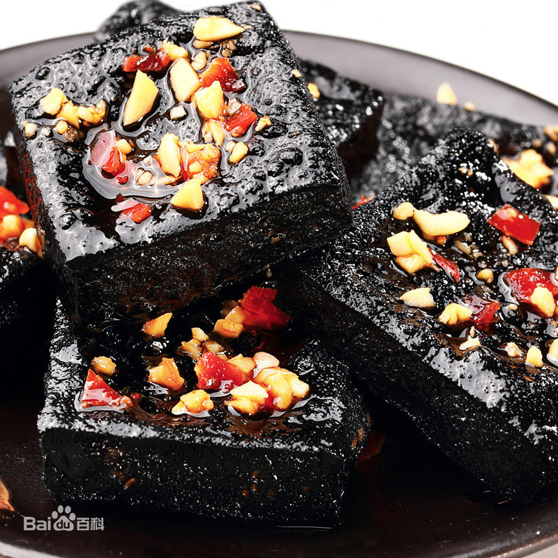
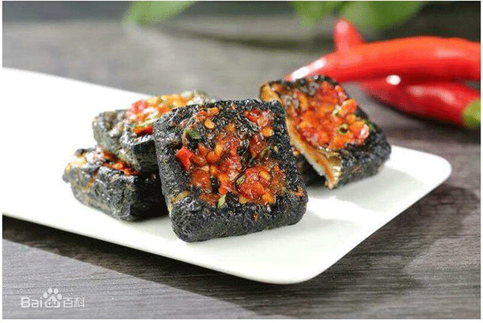
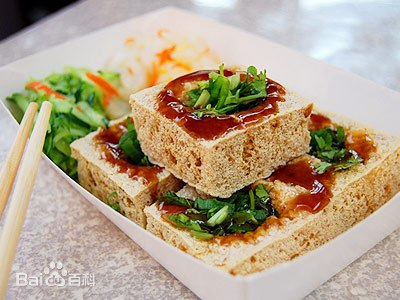

网页制作者：周景涛
我是长沙本地人，大家看到的我的内在就像
我的外表一样，敦厚和实在是我对自己最好的概括。
学号：201916180117
前一位同学：汤清(201916180116) 男 性格比较直爽
后一位同学：陈嘉宇(201916180118) 男 性格比较豪迈
基本信息：臭豆腐（Stinky tofu）是中国传统特色小吃之一，在各地的制作方式、食用方法均有相当大的差异，有北方和南方的不同类型，臭豆腐在南方又称臭干子。其名虽俗气、却外陋内秀、平中见奇、源远流长，是一种极具特色的中华传统小吃，古老而传统，令人欲罢不能。制作材料有大豆、豆豉、纯碱等。臭豆腐“闻着臭”是因为豆腐在发酵腌制和后发酵的过程中，其中所含蛋白质在蛋白酶的作用下分解，所含的硫氨基酸也充分水解，产生一种叫硫化氢（H2S）的化合物，这种化合物具有刺鼻的臭味。 在蛋白质分解后，即产生氨基酸，而氨基酸又具有鲜美的滋味，故“吃着香”。
臭豆腐闻起来臭、吃起来香，有些人对它敬而远之，有些人则将吃它当成了一种嗜好。其实，臭豆腐属于发酵豆制品，制作过程中不仅会产生一定的腐败物质，还容易受到细菌污染，从健康角度考虑，还是少吃为妙。
  